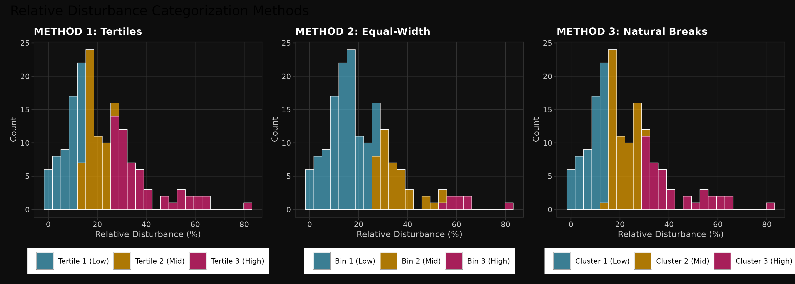
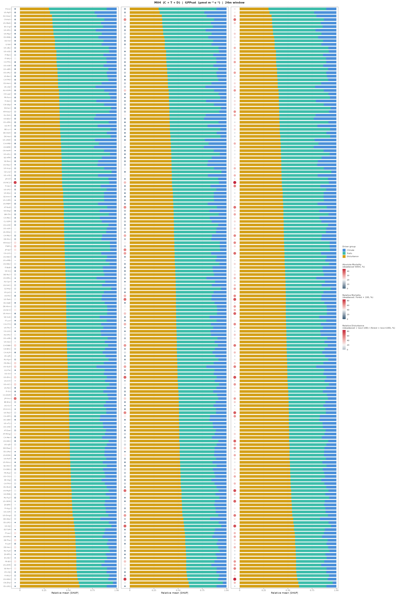

Disturbance Metrics Analysis
How disturbance variables impact ecosystem functional property predictions
Executive Summary
Finding: The hypothesis is CONFIRMED. Disturbance data strongly improves carbon flux predictions (GPPsat, NEPmax) at high-disturbance sites, but provides minimal benefit for water flux predictions (ETmax, uWUE, WUE).
Key insight: The improvement is mechanistic, not spurious. Disturbance variables systematically correct over-predictions of carbon fluxes exactly where disturbance is present (>5% mortality). Water fluxes show no such pattern.
Key Statistics
Part 1: Categorization Method Selection
Problem
How should we divide disturbance into groups? We tested three approaches:
- Tertiles — Equal-sized groups (33.33% / 66.67% cuts)
- Equal-Width — Equal intervals (min-max range divided equally)
- Natural Breaks — Statistical clustering on distribution shape
Decision: USE TERTILES
- ✓ Perfectly balanced groups (55–55–54 sites)
- ✓ Identical thresholds to Natural Breaks (validates approach)
- ✓ Simple interpretation: "low/mid/high disturbance"
- ✓ Maximum statistical power
- ✗ Equal-width rejected due to severe imbalance (76–12–12)
Thresholds Selected
| Metric | Low Tertile (T1) | Mid Tertile (T2) | High Tertile (T3) |
|---|---|---|---|
| Absolute Mortality | ≤0.15% | 0.15–10.75% | >10.75% |
| Relative Mortality | ≤3.27% | 3.27–23.46% | >23.46% |
| Relative Disturbance | ≤3.86% | 3.86–25.73% | >25.73% |
Method Comparison: Categorization Approaches
The three tertile thresholds above were selected after comparing three categorization methods. The plots below show how each approach divides the disturbance data:
Figure 1: Absolute Mortality Categorization Methods

Figure 2: Relative Mortality Categorization Methods

Figure 3: Relative Disturbance Categorization Methods

Part 2: Initial Observation – SHAP Importance
Question
Before testing the main hypothesis, we confirmed: How important are disturbance variables for each EFP?
Key Finding
SHAP Importance by EFP (at high disturbance)
Observation: Disturbance SHAP is already visible as higher at disturbed sites, but we don't yet know the direction (positive/negative).
Part 3: Main Hypothesis Test – Delta RMSE Analysis
Step 1: Do Carbon and Water Fluxes Respond Differently?
Key Observation
Figure 7: Delta RMSE Distribution
Carbon vs Water Fluxes by Disturbance Level (5 independent plots with free y-scales)

Statistical Summary
| EFP Type | Disturbance Level | Mean ΔRMSE | % Improved | Interpretation |
|---|---|---|---|---|
| Carbon | High (T3) | -0.63 | 60% | ✓ Strong improvement |
| Carbon | Mid (T2) | -0.57 | 54% | ✓ Good improvement |
| Water | High (T3) | -0.01 | 52% | ✗ No effect (random) |
| Water | Mid (T2) | +0.01 | 48% | ✗ No effect (random) |
✅ Conclusion: Carbon fluxes benefit strongly; water fluxes don't.
Step 2: How Important Are Disturbance Variables? (SHAP Direction)
Question
To understand WHY disturbance helps carbon but not water, we examine the direction of influence.
Figure 8: Prediction Direction Analysis
Mean Residual (prediction error direction) by Disturbance Level

Key Pattern for HIGH DISTURBANCE
Figure 9: SHAP Importance Heatmap

Figure 10: SHAP Magnitude vs Prediction Direction

✅ Conclusion: Disturbance is 60× more important for carbon fluxes, and systematically corrects over-prediction.
Step 3: Is This Effect Real? (Dose-Response Curves)
Question
Does the benefit depend on HOW MUCH disturbance is present? (mechanistic signal vs noise)
Figure 11: Three-Panel Dose-Response Analysis

✅ Conclusion: Effect is dose-dependent and mechanistic.
Step 4: IGBP Confounding Assessment
Question
Are forests just naturally disturbed? Could IGBP type (not disturbance) be driving the effect?
Absolute Mortality IGBP Analysis


Relative Mortality IGBP Analysis


Part 5: Detailed Model Analysis – Site-Level SHAP Disturbance Effects
Interactive Model, EFP & Lag Selection
Explore site-level SHAP values for disturbance metrics (Absolute Mortality, Relative Mortality, Relative Disturbance) across models and temporal lags. Each plot shows how disturbance metrics influence predictions at individual flux tower sites, stratified by disturbance level.

Model Descriptions
| Model | Features | Description |
|---|---|---|
| M04 | C + T + D | Climate + Traits + Disturbance metrics |
| M06 | C + M + D | Climate + Mortality + Disturbance metrics |
| M08 | C + T + M + D | Climate + Traits + Mortality + Disturbance metrics |
What You're Looking At
- Each panel represents one disturbance metric: Absolute Mortality, Relative Mortality, Relative Disturbance
- Three disturbance level categories: Tertiles (Low, Mid, High) shown horizontally
- Box heights: Magnitude of SHAP values (importance) for each site
- Vertical arrangement: All individual flux tower sites in the model dataset
- Interpretation: Taller boxes at high-disturbance sites = disturbance metrics have stronger influence on predictions where disturbance actually matters